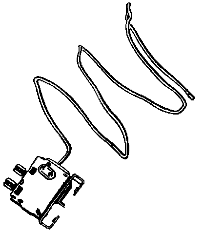

Evaporator Temperature Sensor / Switch: Description and Operation

The temperature switch (where applicable) -E33- monitors the temperature between the evaporator fins to prevent evaporator icing. When the evaporator temperature drops to below 0° C (32° F), the A/C clutch -N25- is switched off.